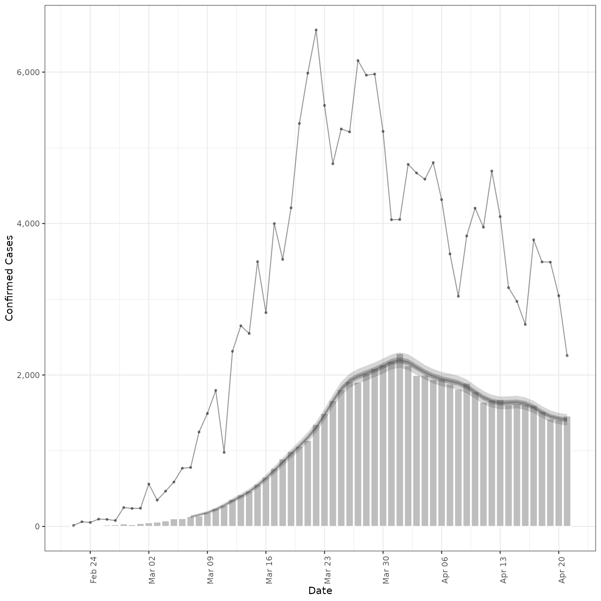
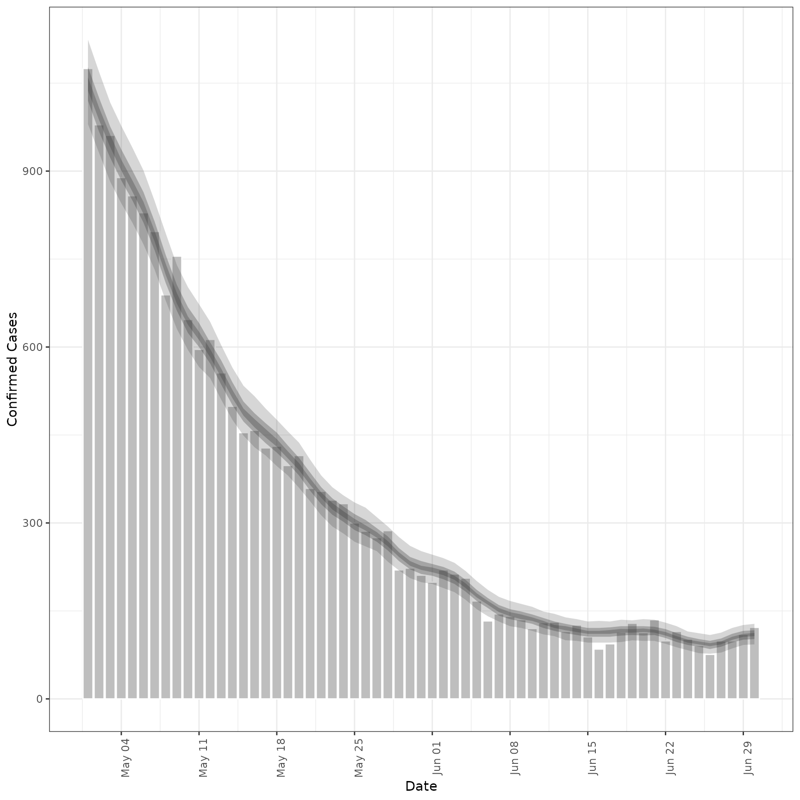
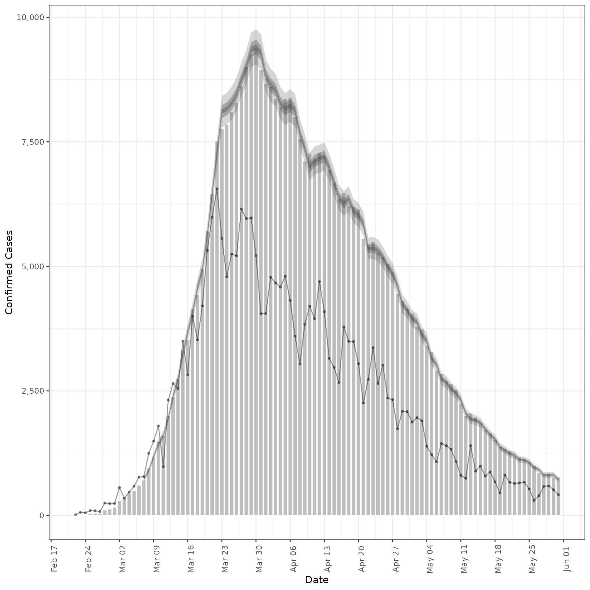
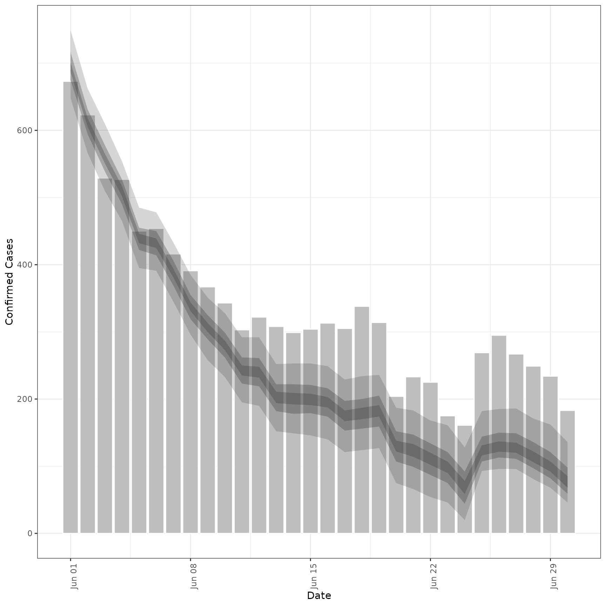

Estimate a Secondary Observation from a Primary Observation
Source:R/estimate_secondary.R
estimate_secondary.Rd![[Experimental]](figures/lifecycle-experimental.svg) Estimates the relationship between a primary and secondary observation, for
example hospital admissions and deaths or hospital admissions and bed
occupancy. See
Estimates the relationship between a primary and secondary observation, for
example hospital admissions and deaths or hospital admissions and bed
occupancy. See secondary_opts() for model structure options. See parameter
documentation for model defaults and options. See the examples for case studies
using synthetic data and here
for an example of forecasting Covid-19 deaths from Covid-19 cases. See
here for a prototype function that
may be used to estimate and forecast a secondary observation from a primary across multiple regions and
here
for an application forecasting Covid-19 deaths in Germany and Poland.
Usage
estimate_secondary(
reports,
secondary = secondary_opts(),
delays = delay_opts(list(mean = 2.5, mean_sd = 0.5, sd = 0.47, sd_sd = 0.25, max = 30)),
truncation = trunc_opts(),
obs = obs_opts(),
burn_in = 14,
CrIs = c(0.2, 0.5, 0.9),
model = NULL,
verbose = interactive(),
...
)Arguments
- reports
A data frame containing the
dateof report and bothprimaryandsecondaryreports.- secondary
A call to
secondary_opts()or a list containing the following binary variables: cumulative, historic, primary_hist_additive, current, primary_current_additive. These parameters control the structure of the secondary model, seesecondary_opts()for details.- delays
A call to
delay_opts()defining delay distributions between primary and secondary observations See the documentation ofdelay_opts()for details. BY default a diffuse prior is assumed with a mean of 14 days and standard deviation of 7 days (with a standard deviation of 0.5 and 0.25 respectively on the log scale).- truncation
- A list of options as generated by
trunc_opts()defining the truncation of observed data. Defaults totrunc_opts(). Seeestimate_truncation()for an approach to estimating truncation from data. - obs
A list of options as generated by
obs_opts()defining the observation model. Defaults toobs_opts().- burn_in
Integer, defaults to 14 days. The number of data points to use for estimation but not to fit to at the beginning of the time series. This must be less than the number of observations.
- CrIs
Numeric vector of credible intervals to calculate.
- model
A compiled stan model to override the default model. May be useful for package developers or those developing extensions.
- verbose
Logical, should model fitting progress be returned. Defaults to
interactive().- ...
Additional parameters to pass to
rstan::sampling.
Value
A list containing: predictions (a data frame ordered by date with the primary,
and secondary observations, and a summary of the model estimated secondary observations),
data (a list of data used to fit the model), and fit (the stanfit object).
Examples
# \donttest{
# set number of cores to use
options(mc.cores = ifelse(interactive(), 4, 1))
#' # load data.table for manipulation
library(data.table)
# load lubridate for dates
library(lubridate)
#>
#> Attaching package: ‘lubridate’
#> The following objects are masked from ‘package:data.table’:
#>
#> hour, isoweek, mday, minute, month, quarter, second, wday, week,
#> yday, year
#> The following objects are masked from ‘package:base’:
#>
#> date, intersect, setdiff, union
library(purrr)
#>
#> Attaching package: ‘purrr’
#> The following object is masked from ‘package:data.table’:
#>
#> transpose
#> The following object is masked from ‘package:EpiNow2’:
#>
#> update_list
#### Incidence data example ####
# make some example secondary incidence data
cases <- example_confirmed
cases <- as.data.table(cases)[, primary := confirm]
# Assume that only 40 percent of cases are reported
cases[, scaling := 0.4]
#> date confirm primary scaling
#> 1: 2020-02-22 14 14 0.4
#> 2: 2020-02-23 62 62 0.4
#> 3: 2020-02-24 53 53 0.4
#> 4: 2020-02-25 97 97 0.4
#> 5: 2020-02-26 93 93 0.4
#> ---
#> 126: 2020-06-26 296 296 0.4
#> 127: 2020-06-27 255 255 0.4
#> 128: 2020-06-28 175 175 0.4
#> 129: 2020-06-29 174 174 0.4
#> 130: 2020-06-30 126 126 0.4
# Parameters of the assumed log normal delay distribution
cases[, meanlog := 1.8][, sdlog := 0.5]
#> date confirm primary scaling meanlog sdlog
#> 1: 2020-02-22 14 14 0.4 1.8 0.5
#> 2: 2020-02-23 62 62 0.4 1.8 0.5
#> 3: 2020-02-24 53 53 0.4 1.8 0.5
#> 4: 2020-02-25 97 97 0.4 1.8 0.5
#> 5: 2020-02-26 93 93 0.4 1.8 0.5
#> ---
#> 126: 2020-06-26 296 296 0.4 1.8 0.5
#> 127: 2020-06-27 255 255 0.4 1.8 0.5
#> 128: 2020-06-28 175 175 0.4 1.8 0.5
#> 129: 2020-06-29 174 174 0.4 1.8 0.5
#> 130: 2020-06-30 126 126 0.4 1.8 0.5
# apply a convolution of a log normal to a vector of observations
weight_cmf <- function(x, ...) {
set.seed(x[1])
meanlog <- rnorm(1, 1.6, 0.2)
sdlog <- rnorm(1, 0.8, 0.1)
cmf <- cumsum(dlnorm(1:length(x), meanlog, sdlog)) -
cumsum(dlnorm(0:(length(x) - 1), meanlog, sdlog))
cmf <- cmf / plnorm(length(x), meanlog, sdlog)
conv <- sum(x * rev(cmf), na.rm = TRUE)
conv <- round(conv, 0)
return(conv)
}
# roll over observed cases to produce a convolution
cases <- cases[, .(date, primary = confirm, secondary = confirm)]
cases <- cases[, secondary := frollapply(secondary, 15, weight_cmf, align = "right")]
cases <- cases[!is.na(secondary)]
# add a day of the week effect and scale secondary observations at 40\% of primary
cases <- cases[lubridate::wday(date) == 1, secondary := round(0.5 * secondary, 0)]
cases <- cases[, secondary := round(secondary * rnorm(.N, 0.4, 0.025), 0)]
cases <- cases[secondary < 0, secondary := 0]
cases <- cases[, secondary := map_dbl(secondary, ~ rpois(1, .))]
# fit model to example data assuming only a given fraction of primary observations
# become secondary observations
inc <- estimate_secondary(cases[1:60],
obs = obs_opts(scale = list(mean = 0.2, sd = 0.2))
)
plot(inc, primary = TRUE)

# forecast future secondary cases from primary
inc_preds <- forecast_secondary(inc, cases[61:.N][, value := primary])
plot(inc_preds, new_obs = cases, from = "2020-05-01")

#### Prevalence data example ####
# make some example prevalence data
cases <- example_confirmed
cases <- as.data.table(cases)
cases <- cases[, .(date,
primary = confirm,
scaled_primary = confirm * rnorm(.N, 0.4, 0.05)
)]
cases$secondary <- 0
cases$secondary[1] <- as.integer(cases$scaled_primary[1])
for (i in 2:nrow(cases)) {
meanlog <- rnorm(1, 1.6, 0.1)
sdlog <- rnorm(1, 0.8, 0.05)
cmf <- cumsum(dlnorm(1:min(i - 1, 20), meanlog, sdlog)) -
cumsum(dlnorm(0:min(19, i - 2), meanlog, sdlog))
cmf <- cmf / plnorm(min(i - 1, 20), meanlog, sdlog)
reducing_cases <- sum(cases$scaled_primary[(i - 1):max(1, i - 20)] * cmf)
reducing_cases <- ifelse(cases$secondary[i - 1] < reducing_cases,
cases$secondary[i - 1], reducing_cases
)
cases$secondary[i] <- as.integer(
cases$secondary[i - 1] + cases$scaled_primary[i] - reducing_cases
)
cases$secondary[i] <- ifelse(cases$secondary[i] < 0, 0,
cases$secondary[i]
)
}
cases <- cases[, secondary := map_dbl(secondary, ~ rpois(1, .))]
# fit model to example prevalence data
prev <- estimate_secondary(cases[1:100],
secondary = secondary_opts(type = "prevalence"),
obs = obs_opts(
week_effect = FALSE,
scale = list(mean = 0.3, sd = 0.1)
)
)
#> Warning: There were 1 divergent transitions after warmup. See
#> https://mc-stan.org/misc/warnings.html#divergent-transitions-after-warmup
#> to find out why this is a problem and how to eliminate them.
#> Warning: Examine the pairs() plot to diagnose sampling problems
plot(prev, primary = TRUE)

# forecast future secondary cases from primary
prev_preds <- forecast_secondary(prev, cases[101:.N][, value := primary])
plot(prev_preds, new_obs = cases, from = "2020-06-01")

# }